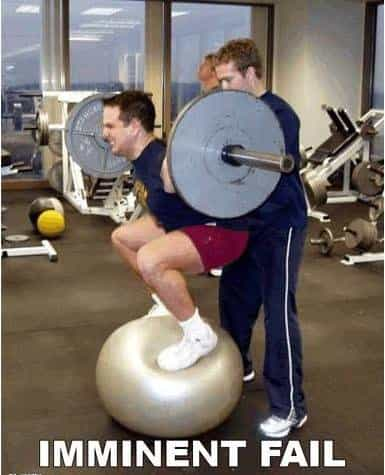

Daryush "Roosh" Valizadeh created ROK in October 2012. You can visit his blog at RooshV.com or follow him on Twitter and Facebook.


By fitness gym I mean any gym that has a 50% female clientele and the yoga mats, aerobics classes, and exercise balls that go with it. Here’s why you shouldn’t bother with these establishments…
1. They are stocked with machines that prevent injury, not build muscle. Good luck finding a squat rack in a fitness gym. Instead you’ll have Smith machines which are designed to make you think you can lift more than you actually can.
2. People go to socialize, not lift heavy ass weight. People are on their iPhones more than they’re on the Cybex machines, which are already half useless. Everything is occupied by people who take forever because they have to send a text message between every set.
What the fack is this?
3. Signs that say “Don’t drop the weights.” If after your last deadlift rep your hands don’t feel like giving way and dropping that bar, you’re not doing enough. I’m not saying to be one of those guys who drops an overhead clean from the sky, but weights are meant to be dropped.
4. Neverending bicep curl. Hey man do you think I can cut into your 30 minute arm shredding workout with the 20 pound dumbbell so I can use them?
5. You have to witness guys spit horrible game. Hey look, there’s a guy with a pot belly trying to show a girl correct form, but his form is not correct and he’s not going to bang her.
6. You pay for classes and equipment you don’t need. A squat rack is cheap, but a treadmill is not, along with having to keep fitness classes stocked with trainers. You end up paying higher prices for equipment you don’t use.
7. The intended market is women who don’t know any better, not strong men. Today you even have gyms that don’t allow grunting. How am I going to push this 200 pound bar above my chest without making noise? Should I whisper?
8. People take up space doing crazy exercises that are the equivalent of a minor stretch. My fitness gym (yes, I’m a sucker) has fat guys pulling on jump rope that’s wrapped around the pull up bar. How long is he going to take before I can do a real exercise on the thing?

9. The New Years resolutioners. You know you’re at a real gym when come January 1 you see no new faces. But at a fitness gym you have to put up with a horde of proles who you know don’t have the will to lift heavy weight like you do.
“I’m going to wait until January 1 to improve my body”
There’s an easy way to avoid all this nonsense: go to gyms that don’t have any women. They’re cheaper and guaranteed to have a squat rack.
Read Next: How To Workout Correctly